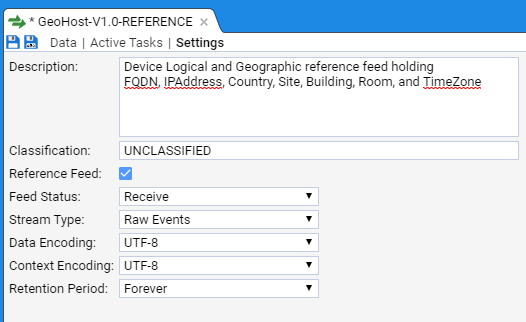
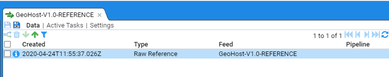
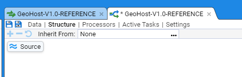
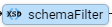

Stroom HOWTO - Create a Simple Reference Feed
A Reference Feed is a temporal set of data that a pipeline's translation can look up to gain additional information to decorate the subject data of the translation. For example, an XML Event.
A Reference Feed is temporal, in that, each time a new set of reference data is loaded into Stroom, the effective date (for the data) is also recorded. Thus by using a timestamp field with the subject data, the appropriate batch of reference data can be accessed.
A typical reference data set to support the Stroom XML Event schema might be on that relates to devices. Such a data set can contain the device logical identifiers such as fully qualified domain name and ip address and their geographical location information such as country, site, building, room and timezone.
The following example will describe how to create a reference feed for such device data. we will call the reference feed GeoHost-V1.0-REFERENCE.
Reference Data
Our reference data will be supplied in a
- the device Fully Qualified Domain Name
- the device IP Address
- the device Country location (using ISO 3166-1 alpha-3 codes)
- the device Site location
- the device Building location
- the device TimeZone location (both standard then daylight timezone offsets from UTC)
For simplicity, our example will use a file with just 3 entries
FQDN IPAddress Country Site Building Room TimeZones
stroomnode00.strmdev00.org 192.168.2.245 GBR Bristol-S00 GZero R00 +00:00/+01:00
stroomnode01.strmdev01.org 192.168.3.117 AUS Sydney-S04 R6 5-134 +10:00/+11:00
host01.company4.org 192.168.4.220 USA LosAngeles-S19 ILM C5-54-2 -08:00/-07:00
A copy of this sample data source can be found here. Save a copy of this data to your local environment for use later in this HOWTO. Save this file as a text document with ANSI encoding.
Creation
To create our Reference Event stream we need to create:
- the Feed
- a Pipeline to automatically process and store the Reference data
- a Text Parser to convert the text file into simple XML record format, and
- a Translation to create reference data maps
Create Feed
First, within the Explorer pane, and with the cursor having selected the Event Sources group, right click the mouse to have the object context menu appear.

If you hover over the  icon then the New sub-context menu will be revealed.
icon then the New sub-context menu will be revealed.
Now hover the mouse over the  icon and right click to select.
icon and right click to select.

When the New Feed selection windows comes up, navigate to the Event Sources system group. Then enter the name of the reference feed GeoHost-V1.0-REFERENCE onto the Name: text entry box.
On pressing the OK button we will see the following Feed configuration tab appear.

Click on the Settings sub-item in the GeoHost-V1.0-REFERENCE Feed tab to populate the initial Settings configuration. Enter an appropriate description, classification and click on the Reference Feed check box

and we then use the Stream Type drop-down menu to set the stream type as Raw Reference. At this point we save our configuration so far, by clicking on the  icon. The save icon becomes ghosted and our feed configuration has been saved.
icon. The save icon becomes ghosted and our feed configuration has been saved.

Load sample Reference data
At this point we want to load our sample reference data, in order to develop our reference feed. We can do this two ways - posting the file to our Stroom web server, or directly upload the data using the user interface. For this example we will use Stroom's user interface upload facility.
First, open the Data sub-item in the GeoHost-V1.0-REFERENCE feed configuration tab to reveal

Note the Upload icon  in the bottom left of the Stream table (top pane). On clicking the Upload icon, we are presented with the data upload selection window.
in the bottom left of the Stream table (top pane). On clicking the Upload icon, we are presented with the data upload selection window.

Naturally, as this is a reference feed we are creating and this is raw data we are uploading, we select a Stream Type: of Raw Reference. We need to set the Effective: date (really a timestamp) for this specific stream of reference data. Clicking in the Effective: entry box will cause a calendar selection window to be displayed (initially set to the current date).

We are going to set the effective date to be late in 2019. Normally, you would choose a time stamp that matches the generation of the reference data. Click on the blue Previous Month icon (a less than symbol <) on the Year/Month line to move back to December 2019.

Select the 1st (clicking on 1) at which point the calendar selection window will disappear and a time of 2019-12-01T00:00:00.000Z is displayed. This is the default whenever using the calendar selection window in Stroom - the resultant timestamp is that of the day selected at 00:00:00 (Zulu time). To get the calendar selection window to disappear, click anywhere outside of the timestamp entry box.

Note, if you happen to click on the OK button before selecting the File (or Stream Type for that matter), an appropriate Alert dialog box will be displayed

We don't need to set Meta Data for this stream of reference data, but we (obviously) need to select the file. For the purposes of this example, we will utilise the file GeoHostReference.log you downloaded earlier in the Reference Data section of this document. This file contains a header and three lines of reference data as per
FQDN IPAddress Country Site Building Room TimeZones
stroomnode00.strmdev00.org 192.168.2.245 GBR Bristol-S00 GZero R00 +00:00/+01:00
stroomnode01.strmdev01.org 192.168.3.117 AUS Sydney-S04 R6 5-134 +10:00/+11:00
host01.company4.org 192.168.4.220 USA LosAngeles-S19 ILM C5-54-2 -08:00/-07:00
When we construct the pipeline for this reference feed, we will see how to make use of the header line.
So, click on the Choose File button to bring up a file selector window. Navigate within the selector window to the location on your location machine where you have saved the GeoHostReference.log file. On clicking Open we return to the Upload window with the file selected.

On clicking OK we get an Alert dialog window to advise a file has been uploaded.

at which point we press Close.
At this point, the Upload selection window closes, and we see our file displayed in the GeoHost-V1.0-REFERENCE Data stream table.

When we click on the newly up-loaded stream in the Stream Table pane we see the other two panes fill with information.

The middle pane shows the selected or Specific feed and any linked streams. A linked stream could be the resultant Reference data set generated from a Raw Reference stream. If errors occur during processing of the stream, then a linked stream could be an Error stream.
The bottom pane displays the selected stream's data or meta-data. If we click on the Meta link at the top of this pane, we will see the Metadata associated with this stream. We also note that the Meta link at the bottom of the pane is now embolden.

We can see the metadata we set - the EffectiveTime, and implicitly, the Feed but we also see additional fields that Stroom has added that provide more detail about the data and its delivery to Stroom such as how and when it was received. We now need to switch back to the Data display as we need to author our reference feed translation.
Create Pipeline
We now need to create the pipeline for our reference feed so that we can create our translation and hence create reference data for our feed.
Within the Explorer pane, and having selected the Event Sources system group, right click to bring up the object context menu, then the New sub-context menu. Move to the  and left click to select. When the New Pipeline selection window appears, navigate to, then select the
and left click to select. When the New Pipeline selection window appears, navigate to, then select the Feeds and Translations system group then enter the name of the reference feed, GeoHost-V1.0-REFERENCE in the Name: text entry box.

On pressing the OK button you will be presented with the new pipeline's configuration tab

Within Settings, enter an appropriate description as per

We now need to select the structure this pipeline will use. We need to move from the Settings sub-item on the pipeline configuration tab to the Structure sub-item. This is done by clicking on the Structure link, at which we will see

As this pipeline will be processing reference data, we would use a Reference Data pipeline. This is done by inheriting it from a defined set of Standard Pipelines. To do this, click on the menu selection icon  to the right of the Inherit From: test display box.
to the right of the Inherit From: test display box.
When the Choose item selection window appears, navigate to Template Pipelines system group (if not already displayed), and select (left click) the 
Reference Data pipeline

then press OK. At this we will see the inherited pipeline structure of

Noting that this pipeline has not yet been saved - indicated by the * in the tab label and the highlighted  , click on the
, click on the  to save, which results in
to save, which results in

This ends the first stage of the pipeline creation. We need to author the feed's translation.
Create Text Converter
To turn our tab delimited data in Stroom reference data, we first need to convert the text into simple XML. We do this using a Text Converter. Test Converters use a Stroom Data Splitter to convert text into simple XML.
Within the Explorer pane, and having selected the Event Sources system group, right click to bring up the object context menu. Navigate to the  , click on the
, click on the  item and left click to select.
item and left click to select.
When the New Text Converter selection window comes up, navigate to and select Event Sources system group, then enter the name of the feed, GeoHost-V1.0-REFERENCE into the Name: text entry box as per

On pressing the OK button we see the next text converter's configuration tab displayed.

Enter an appropriate description into the Description: text entry box, for instance
Text converter for device Logical and Geographic reference feed holding FQDN, IPAddress, Country, Site, Building, Room and Time Zones. Feed has a header and is tab separated.
Set the Converter Type: to be Data Splitter from the drop-down menu.

We next press the Conversion sub-item on the TextConverter tab to bring up the Data Splitter editing window.
The following is our Data Splitter code (see Data Splitter documentation for more complete details)
<?xml version="1.1" encoding="UTF-8"?>
<dataSplitter xmlns="data-splitter:3" xmlns:xsi="http://www.w3.org/2001/XMLSchema-instance" xsi:schemaLocation="data-splitter:3 file://data-splitter-v3.0.1.xsd" version="3.0">
<!--
GEOHOST REFERENCE FEED:
CHANGE HISTORY
v1.0.0 - 2020-02-09 John Doe
This is a reference feed for device Logical and Geographic data.
The feed provides for each device
* the device FQDN
* the device IP Address
* the device Country location (using ISO 3166-1 alpha-3 codes)
* the device Site location
* the device Building location
* the device Room location
*the device TimeZone location (both standard then daylight timezone offsets from UTC)
The data is a TAB delimited file with the first line providing headings.
Example data:
FQDN IPAddress Country Site Building Room TimeZones
stroomnode00.strmdev00.org 192.168.2.245 GBR Bristol-S00 GZero R00 +00:00/+01:00
stroomnode01.strmdev01.org 192.168.3.117 AUS Sydney-S04 R6 5-134 +10:00/+11:00
host01.company4.org 192.168.4.220 USA LosAngeles-S19 ILM C5-54-2 -08:00/-07:00
-->
<!-- Match the heading line - split on newline and match a maximum of one line -->
<split delimiter="\n" maxMatch="1">
<!-- Store each heading and note we split fields on the TAB (	) character -->
<group>
<split delimiter="	">
<var id="heading"/>
</split>
</group>
</split>
<!-- Match all other data lines - splitting on newline -->
<split delimiter="\n">
<group>
<!-- Store each field using the column heading number for each column ($heading$1) and note we split fields on the TAB (	) character -->
<split delimiter="	">
<data name="$heading$1" value="$1"/>
</split>
</group>
</split>
</dataSplitter>
At this point we want to save our Text Converter, so click on the  icon.
icon.
A copy of this data splitter can be found here.
Assign Text Converter to Pipeline
To test our Text Converter, we need to modify our GeoHost-V1.0-REFERENCE pipeline to use it. Select the GeoHost-V1.0-REFERENCE pipeline tab and then select the Structure sub-item

To associate our new Text Converter with the pipeline, click on the  icon then move the cursor to the Property (middle) pane then double click on the textConverter Property Name to allow you to edit the property as per
icon then move the cursor to the Property (middle) pane then double click on the textConverter Property Name to allow you to edit the property as per

We leave the Property Source: as Inherit but we need to change the Property Value: from None to be our newly created GeoHost-V1.0-REFERENCE text Converter

then press OK. At this we will see the Property Value set

Again press OK to finish editing this property and we then see that the textConverter property has been set to GeoHost-V1.0-REFERENCE. Similarly set the type property Value to "Data Splitter".
At this point, we should save our changes, by clicking on the highlighted  icon. The combined Parser window panes should now look like
icon. The combined Parser window panes should now look like

Test Text Converter
To test our Text Converter, we select the GeoHost-V1.0-REFERENCE Feed tab  then click on our uploaded stream in the Stream Table pane, then click the check box of the Raw Reference stream in the Specific Stream table (middle pane)
then click on our uploaded stream in the Stream Table pane, then click the check box of the Raw Reference stream in the Specific Stream table (middle pane)

We now want to step our data through the Text Converter. We enter Stepping Mode by pressing the stepping button  found at the bottom of the right of the stream Raw Data display.
found at the bottom of the right of the stream Raw Data display.
You will then be requested to choose a pipeline to step with, at which, you should navigate to the GeoHost-V1.0-REFERENCE pipeline as per

then press OK.
At this point we enter the pipeline Stepping tab

which initially displays the Raw Reference data from our stream.
We click on the  icon, to display.
icon, to display.

This stepping window is divided into three sub-panes. the top one is the Text Converter editor and it will allow you to adjust the text conversion should you wish too. The bottom left window displays the input to the Text Converter. The bottom right window displays the output from the Text Converter for the given input.
We now click on the pipeline Step Forward button  to single step the Raw reference data throughout text converter. We see that the Stepping function has displayed the heading and first data line of our raw reference data in the input sub-pane and the resultant simple records XML (adhering to the Stroom records v2.0 schema) in the output pane.
to single step the Raw reference data throughout text converter. We see that the Stepping function has displayed the heading and first data line of our raw reference data in the input sub-pane and the resultant simple records XML (adhering to the Stroom records v2.0 schema) in the output pane.

If we again press the  button we see the second line in our raw reference data in the input sub-pane and the resultant simple records XML in the output pane.
button we see the second line in our raw reference data in the input sub-pane and the resultant simple records XML in the output pane.

Pressing the Step Forward button  again displays our third and last line of our raw and converted data.
again displays our third and last line of our raw and converted data.

We have now successfully tested the Text Converter for our reference feed. Our next step is to author our translation to generate reference data records that Stroom can use.
Create XSLT Translation
We now need to create our translation. This XSLT translation will convert simple records XML data into ReferenceData records - see the Stroom reference-data v2.0.1 Schema for details.
We first need to create an XSLT translation for our feed. Move back to the Explorer window, and with the cursor having selected the Event Sources system group, right click the mouse to display the object context menu, select New

and then move the cursor to the  item, then left click to select.
item, then left click to select.
When the New XSLT selection window comes up, navigate to the Event Sources system group and enter the name of the reference feed - GeoHost-V1.0-REFERENCE into the Name: text entry box as per

On pressing the OK button we see the XSL tab for our translation and as previously, we enter an appropriate description before selecting the XSLT sub-item.

On selection of the XSLT sub-item, we are presented with the XSLT editor window

At this point, rather than edit the translation in this editor and then assign this translation to the GeoHost-V1.0-REFERENCE pipeline, we will first make the assignment in the pipeline and then develop the translation whilst stepping through the raw data. This is to demonstrate there are a number of ways to develop a translation.
So, to start, save the XSLT by clicking on the  icon, then click on the GeoHost-V1.0-REFERENCE pipeline
icon, then click on the GeoHost-V1.0-REFERENCE pipeline  tab to raise the GeoHost-V1.0-REFERENCE pipeline. Then select the Structure sub-item followed by selecting the XSL translationFilter icon. We now see the XSL translationFilter Property Table for our pipeline in the middle pane.
tab to raise the GeoHost-V1.0-REFERENCE pipeline. Then select the Structure sub-item followed by selecting the XSL translationFilter icon. We now see the XSL translationFilter Property Table for our pipeline in the middle pane.

To associate our new translation with the pipeline, move the cursor to the Property Table, click on the grayed out xslt Property Name and then click on the Edit Property  icon to allow you to edit the property as per
icon to allow you to edit the property as per

We leave the Property Source: as Inherit and we need to change the Property Value: from None to be our newly created GeoHost-V1.0-REFERENCE XSL translation.
To do this, position the cursor over the menu selection icon  of the Value: chooser and right click, at which the
of the Value: chooser and right click, at which the Choose item selection window appears. Navigate to the Event Sources system group then select the GeoHost-V1.0-REFERENCE xsl translation.

then press OK. At this point we will see the property Value: set

Again press OK to finish editing this property and we see that the xslt property has been set to GeoHost-V1.0-REFERENCE.

At this point, we should save our changes, by clicking on the highlighted  icon.
icon.
Test XSLT Translation
We now go back to the GeoHost-V1.0-REFERENCE Feed tab then click on our uploaded stream in the Stream Table pane. Next click the check box of the Raw Reference stream in the Specific Stream table (middle pane) as per
We now want to step our data through the xslt Translation. We enter Stepping Mode by pressing the stepping button  found at the bottom of the right of the stream Raw Data display.
found at the bottom of the right of the stream Raw Data display.
You will then be requested to choose a pipeline to step with, at which, you should navigate to the GeoHost-V1.0-REFERENCE pipeline as per

then press OK.
At this point we enter the pipeline through the Stepping tab
which initially displays the Raw Reference data from our stream.
We click on the  icon to enter the xslt Translation stepping window and all panes are empty.
icon to enter the xslt Translation stepping window and all panes are empty.

As for the Text Converter, this translation stepping window is divided into three sub-panes. The top one is the XSLT Translation. The bottom right window displays the output from the XSLT Translation for the given input.
We now click on the pipeline Step Forward button  to single step the Raw reference data through our translation. We see that the Stepping function has displayed the first records XML entry in the input sub-pane and the same data is displayed in the output sub-pane.
to single step the Raw reference data through our translation. We see that the Stepping function has displayed the first records XML entry in the input sub-pane and the same data is displayed in the output sub-pane.

But we also note if we move along the pipeline structure to the  we will see a schema fault is displayed  .
.

In essence, since the translation has done nothing, and the data is simple records XML, the system is indicating that it expects the output data to be in the reference-data v2.0.1 format.
We can correct this by adding the skeleton xslt translation for reference data into our translationFilter. Move back to the  icon on the pipeline structure and add the following to the xsl
window
icon on the pipeline structure and add the following to the xsl
window
<?xml version="1.1" encoding="UTF-8" ?>
<xsl:stylesheet xpath-default-namespace="records:2"
xmlns="reference-data:2"
xmlns:xsl="http://www.w3.org/1999/XSL/Transform"
xmlns:xsi="http://www.w3.org/2001/XMLSchema-instance" xmlns:stroom="stroom"
xmlns:evt="event-logging:3"
version="2.0">
<xsl:template match="records">
<referenceData xmlns="reference-data:2"
xsi:schemaLocation="reference-data:2 file://reference-data-v2.0.xsd" version="2.0.1">
xmlns:xsi="http://www.w3.org/2001/XMLSchema-instance"
<xsl:apply-templates/>
</referenceData>
</xsl:template>
<!-- MAIN TEMPLATE -->
<xsl:template match="record">
<reference>
<map></map>
<key></key>
<value></value>
</reference>
</xsl:template>
</xsl:stylesheet>
And on pressing the refresh button  we see that the output window is an empty ReferenceData element.
we see that the output window is an empty ReferenceData element.

Also note that if we move to the icon on the pipeline structure, we no longer have an "Invalid Schema Location" error.
We next extend the translation to actually generate reference data. The translation will now look like
<?xml version="1.1" encoding="UTF-8" ?>
<xsl:stylesheet xpath-default-namespace="records:2"
xmlns="reference-data:2"
xmlns:xsl="http://www.w3.org/1999/XSL/Transform"
xmlns:xsi="http://www.w3.org/2001/XMLSchema-instance"
xmlns:stroom="stroom"
xmlns:evt="event-logging:3"
version="2.0">
<!--
GEOHOST REFERENCE FEED:
CHANGE HISTORY
v1.0.0 - 2020-02-09 John Doe
This is a reference feed for device Logical and Geographic data.
The feed provides for each device
* the device FQDN
* the device IP Address
* the device Country location (using ISO 3166-1 alpha-3 codes)
* the device Site location
* the device Building location
* the device Room location
*the device TimeZone location (both standard then daylight timezone offsets from UTC)
The reference maps are
FQDN_TO_IP - Fully Qualified Domain Name to IP Address
IP_TO_FQDN - IP Address to FQDN (HostName)
FQDN_TO_LOC - Fully Qualified Domain Name to Location element
-->
<xsl:template match="records">
<referenceData xmlns="reference-data:2"
xsi:schemaLocation="reference-data:2 file://reference-data-v2.0.xsd" version="2.0.1">
<xsl:apply-templates/>
</referenceData>
</xsl:template>
<!-- MAIN TEMPLATE -->
<xsl:template match="record">
<!-- FQDN_TO_IP map -->
<reference>
<map>FQDN_TO_IP</map>
<key>
<xsl:value-of select="lower-case(data[@name='FQDN']/@value)" />
</key>
<value>
<IPAddress>
<xsl:value-of select="data[@name='IPAddress']/@value" />
</IPAddress>
</value>
</reference>
<!-- IP_TO_FQDN map -->
<reference>
<map>IP_TO_FQDN</map>
<key>
<xsl:value-of select="lower-case(data[@name='IPAddress']/@value)" />
</key>
<value>
<HostName>
<xsl:value-of select="data[@name='FQDN']/@value" />
</HostName>
</value>
</reference>
</xsl:template>
</xsl:stylesheet>
and when we refresh, by pressing the Refresh Current Step button  we see that the output window now has Reference elements within the parent ReferenceData element
we see that the output window now has Reference elements within the parent ReferenceData element

If we press the Step Forward button  we see the second record of our raw reference data in the input sub-pane and the resultant Reference elements
we see the second record of our raw reference data in the input sub-pane and the resultant Reference elements

At this point it would be wise to save our translation. This is done by clicking on the highlighted  icon in the top left-hand area of the window under the tabs.
icon in the top left-hand area of the window under the tabs.
We can now further our Reference by adding a Fully Qualified Domain Name to Location reference - FQDN_TO_LOC and so now the translation looks like
<?xml version="1.1" encoding="UTF-8" ?>
<xsl:stylesheet xpath-default-namespace="records:2"
xmlns="reference-data:2"
xmlns:xsl="http://www.w3.org/1999/XSL/Transform"
xmlns:xsi="http://www.w3.org/2001/XMLSchema-instance"
xmlns:stroom="stroom"
xmlns:evt="event-logging:3"
version="2.0">
<!--
GEOHOST REFERENCE FEED:
CHANGE HISTORY
v1.0.0 - 2020-02-09 John Doe
This is a reference feed for device Logical and Geographic data.
The feed provides for each device
* the device FQDN
* the device IP Address
* the device Country location (using ISO 3166-1 alpha-3 codes)
* the device Site location
* the device Building location
* the device Room location
*the device TimeZone location (both standard then daylight timezone offsets from UTC)
The reference maps are
FQDN_TO_IP - Fully Qualified Domain Name to IP Address
IP_TO_FQDN - IP Address to FQDN (HostName)
FQDN_TO_LOC - Fully Qualified Domain Name to Location element
-->
<xsl:template match="records">
<referenceData xmlns="reference-data:2"
xsi:schemaLocation="reference-data:2 file://reference-data-v2.0.xsd" version="2.0.1">
<xsl:apply-templates/>
</referenceData>
</xsl:template>
<!-- MAIN TEMPLATE -->
<xsl:template match="record">
<!-- FQDN_TO_IP map -->
<reference>
<map>FQDN_TO_IP</map>
<key>
<xsl:value-of select="lower-case(data[@name='FQDN']/@value)" />
</key>
<value>
<IPAddress>
<xsl:value-of select="data[@name='IPAddress']/@value" />
</IPAddress>
</value>
</reference>
<!-- IP_TO_FQDN map -->
<reference>
<map>IP_TO_FQDN</map>
<key>
<xsl:value-of select="lower-case(data[@name='IPAddress']/@value)" />
</key>
<value>
<HostName>
<xsl:value-of select="data[@name='FQDN']/@value" />
</HostName>
</value>
</reference>
<!-- FQDN_TO_LOC map -->
<reference>
<map>FQDN_TO_LOC</map>
<key>
<xsl:value-of select="lower-case(data[@name='FQDN']/@value)" />
</key>
<value>
<!--
Note, when mapping to a XML node set, we make use of the Event namespace - i.e. evt:
defined on our stylesheet element. This is done, so that, when the node set is returned,
it is within the correct namespace.
-->
<evt:Location>
<evt:Country>
<xsl:value-of select="data[@name='Country']/@value" />
</evt:Country>
<evt:Site>
<xsl:value-of select="data[@name='Site']/@value" />
</evt:Site>
<evt:Building>
<xsl:value-of select="data[@name='Building']/@value" />
</evt:Building>
<evt:Room>
<xsl:value-of select="data[@name='Room']/@value" />
</evt:Room>
<evt:TimeZone>
<xsl:value-of select="data[@name='TimeZones']/@value" />
</evt:TimeZone>
</evt:Location>
</value>
</reference>
</xsl:template>
</xsl:stylesheet>
and our second ReferenceData element would now look like

We have completed the translation and have hence completed the development of our GeoHost-V1.0-REFERENCE reference feed.
At this point, the reference feed is set up to accept Raw Reference data, but it will not automatically process the raw data and hence it will not place reference data into the reference data store. To have Stroom automatically process Raw Reference streams, you will need to enable Processors for this pipeline.
Enabling the Reference Feed Processors
We now create the pipeline Processors for this feed, so that the raw reference data will be transformed into Reference Data on ingest and save to Reference Data stores.
Open the reference feed pipeline by selecting the GeoHost-V1.0-REFERENCE pipeline tab to raise the GeoHost-V1.0-REFERENCE pipeline. Then select the Processors sub-item to show

This configuration tab is divided into two panes. The top pane shows the current enabled Processors and any recently processed streams and the bottom pane provides meta-data about each Processor or recently processed streams.
First, move the mouse to the Add Processor  icon at the top left of the top pane. Select by left clicking this icon to have displayed the Add Filter selection window
icon at the top left of the top pane. Select by left clicking this icon to have displayed the Add Filter selection window

This selection window allows us to filter what set of data streams we want our Processor to process. As our intent is to enable processing for all GeoHost-V1.0-REFERENCE streams, both already received and yet to be received, then our filtering criteria is just to process all Raw Reference for this feed, ignoring all other conditions.
To do this, first click on the Add Term  icon. Keep the term and operator at the default settings, and select the Choose item
icon. Keep the term and operator at the default settings, and select the Choose item  icon to navigate to the desired feed name (GeoHost-V1.0-REFERENCE) object
icon to navigate to the desired feed name (GeoHost-V1.0-REFERENCE) object

and press OK to make the selection.
Next, we select the required stream type. To do this click on the Add Term  icon again. Click on the down arrow to change the Term selection from Feed to Type. Click in the Value position on the highlighted line (it will be currently empty). Once you have clicked here a drop-down box will appear as per
icon again. Click on the down arrow to change the Term selection from Feed to Type. Click in the Value position on the highlighted line (it will be currently empty). Once you have clicked here a drop-down box will appear as per

at which point, select the Stream Type of Raw Referenceand then press OK. At this we return to the Add Processor selection window to see that the Raw Reference stream type has been added.

Note the Processor has been added but it is in a disabled state. We enable both pipeline processor and the processor filter

Note - if this is the first time you have set up pipeline processing on your Stroom instance you may need to check that the Stream Processor job is enabled on your Stroom instance. To do this go to the Stroom main menu and select Monitoring>Jobs> Check the status of the Stream Processor job and enable if required. If you need to enable the job also ensure you enable the job on the individual nodes as well (go to the bottom window pane and select the enable box on the far right)


Returning to the tab, Processors sub-item, if everything is working on your Stroom instance you should now see that Raw Reference streams are being processed by your processor - the Streams count is incrementing and the Tracker% is incrementing (when the Tracker% is 100% then all streams you selected (Filtered for) have been processed)

Navigating back to the Data sub-item and clicking on the reference feed stream in the Stream Table we see

In the top pane, we see the Streams table as per normal, but in the Specific stream table we see that we have both a Raw Reference stream and its child Reference stream. By clicking on and highlighting the Reference stream we see its content in the bottom pane.
The complete ReferenceData for this stream is
<?xml version="1.1" encoding="UTF-8"?>
<referenceData xmlns="reference-data:2" xmlns:xsi="http://www.w3.org/2001/XMLSchema-instance" xmlns:stroom="stroom" xmlns:evt="event-logging:3" xsi:schemaLocation="reference-data:2 file://reference-data-v2.0.xsd" version="2.0.1">
<reference>
<map>FQDN_TO_IP</map>
<key>stroomnode00.strmdev00.org</key>
<value>
<IPAddress>192.168.2.245</IPAddress>
</value>
</reference>
<reference>
<map>IP_TO_FQDN</map>
<key>192.168.2.245</key>
<value>
<HostName>stroomnode00.strmdev00.org</HostName>
</value>
</reference>
<reference>
<map>FQDN_TO_LOC</map>
<key>stroomnode00.strmdev00.org</key>
<value>
<evt:Location>
<evt:Country>GBR</evt:Country>
<evt:Site>Bristol-S00</evt:Site>
<evt:Building>GZero</evt:Building>
<evt:Room>R00</evt:Room>
<evt:TimeZone>+00:00/+01:00</evt:TimeZone>
</evt:Location>
</value>
</reference>
<reference>
<map>FQDN_TO_IP</map>
<key>stroomnode01.strmdev01.org</key>
<value>
<IPAddress>192.168.3.117</IPAddress>
</value>
</reference>
<reference>
<map>IP_TO_FQDN</map>
<key>192.168.3.117</key>
<value>
<HostName>stroomnode01.strmdev01.org</HostName>
</value>
</reference>
<reference>
<map>FQDN_TO_LOC</map>
<key>stroomnode01.strmdev01.org</key>
<value>
<evt:Location>
<evt:Country>AUS</evt:Country>
<evt:Site>Sydeny-S04</evt:Site>
<evt:Building>R6</evt:Building>
<evt:Room>5-134</evt:Room>
<evt:TimeZone>+10:00/+11:00</evt:TimeZone>
</evt:Location>
</value>
</reference>
<reference>
<map>FQDN_TO_IP</map>
<key>host01.company4.org</key>
<value>
<IPAddress>192.168.4.220</IPAddress>
</value>
</reference>
<reference>
<map>IP_TO_FQDN</map>
<key>192.168.4.220</key>
<value>
<HostName>host01.company4.org</HostName>
</value>
</reference>
<reference>
<map>FQDN_TO_LOC</map>
<key>host01.company4.org</key>
<value>
<evt:Location>
<evt:Country>USA</evt:Country>
<evt:Site>LosAngeles-S19</evt:Site>
<evt:Building>ILM</evt:Building>
<evt:Room>C5-54-2</evt:Room>
<evt:TimeZone>-08:00/-07:00</evt:TimeZone>
</evt:Location>
</value>
</reference>
</referenceData>
If we go back to the reference feed itself (and click on the  button on the far right of the top and middle panes), we now see both the Reference and Raw Reference streams in the Streams Table pane.
button on the far right of the top and middle panes), we now see both the Reference and Raw Reference streams in the Streams Table pane.

Selecting the Reference stream in the Stream Table will result in the Specific stream pane displaying the Raw Reference and its child Reference stream (highlighted) and the actual ReferenceData output in the Data pane at the bottom.

Selecting the Raw Reference stream in the Streams Table will result in the Specific stream pane displaying the Raw Reference and its child Reference stream as before, but with the Raw Reference stream highlighted and the actual Raw Reference input data displayed in the Data pane at the bottom.

The creation of the Raw Reference is now complete.
At this point you may wish to organise the resources you have created within the Explorer pane to a more appropriate location such as Reference/GeoHost. Because Stroom Explorer is a flat structure you can move resources around to reorganise the content without any impact on directory paths, configurations etc.

Now you have created the new folder structure you can move the various GeoHost resources to this location. Select all four resources by using the mouse right-click button while holding down the Shift key. Then right click on the highlighted group to display the action menu

Select move and the Move Multiple Items window will display. Navigate to the Reference/GeoHost folder to move the items to this destination.

The final structure is seen below